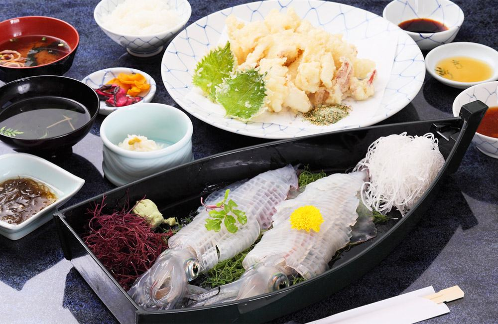
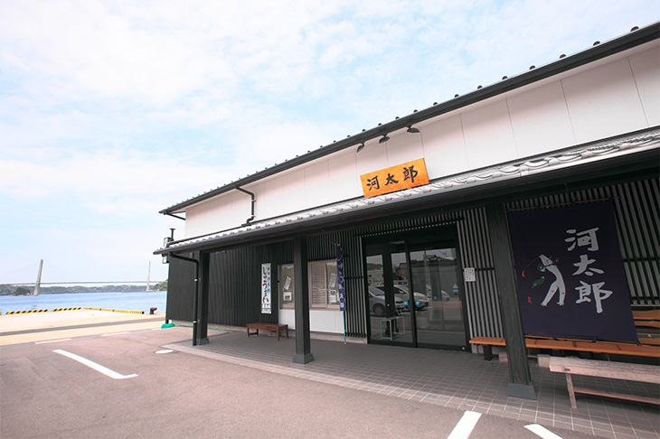
| 営業時間 | 月〜金 11:00〜17:00（L.O.16:00、最終入店15:30）／土・日・祝 10:00〜19:00（L.O.18:00、最終入店17:30）※仕入れや予約状況により最終入店時間を繰り上げる場合あり（公式サイト 2026-11-21 取得） |
|---|---|
| 定休日 | お盆・年末年始（年末年始は12月30日〜1月4日） |
| 住所 | 佐賀県唐津市呼子町呼子1744-17 |
| 予約 | 原則不可。公式サイトに「予約は基本受け付けておりません」と明記。当日は店頭での受付順。問い合わせ・土産の地方発送は電話 0955-82-3208 — ☎ 0955-82-3208 ／ 公式サイト |
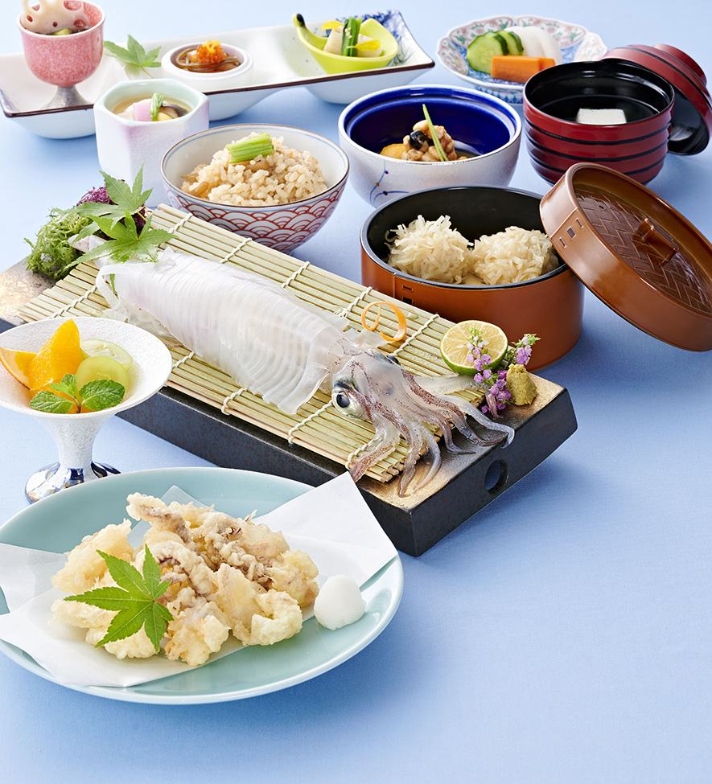
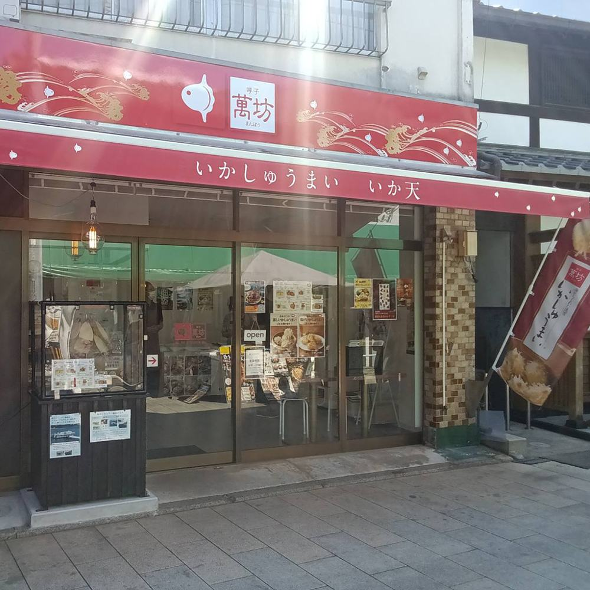
| 営業時間 | 平日 11:00〜16:00（オーダーストップ15:00）／土日祝 11:00〜17:00（オーダーストップ16:00）※当面のあいだ早めに閉店する場合あり（公式サイト 営業日時 2026-11-21 取得） |
|---|---|
| 定休日 | 毎週木曜日（祝日の場合は振り替え。2026年の店休日は11月19日・11月26日・12月3日・12月10日・12月17日・12月24日・12月31日の各木曜日） |
| 住所 | 佐賀県唐津市呼子町殿ノ浦1944番地1 |
| 予約 | インターネット予約のみ（TableCheck https://www.tablecheck.com/ja/manbou/reserve/message ）。電話予約は不可だが11名以上の団体は電話 0955-82-4888 で相談。予約無しでも番号札を取って来店順に入れる — ☎ 0955-82-5333 ／ 公式サイト |
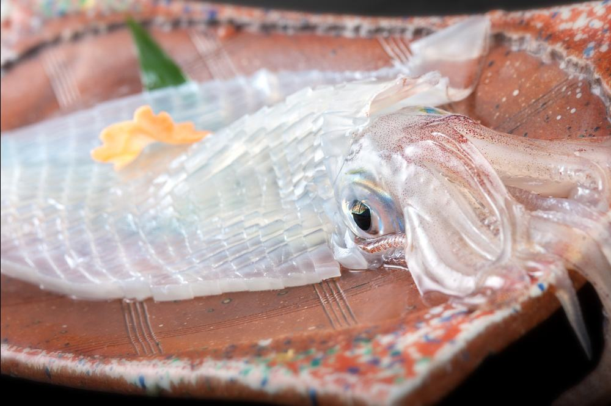
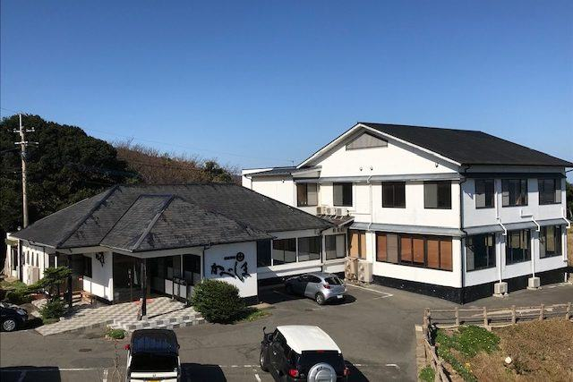
| 営業時間 | 11:00〜17:00（ラストオーダー16:00）（公式サイト 2026-11-21 取得） |
|---|---|
| 定休日 | 元日、水曜日（祝日・ゴールデンウィーク・お盆・正月期間は除く）。2026年11月は11月17日（火）が臨時休業 |
| 住所 | 佐賀県唐津市呼子町加部島260-1 |
| 予約 | 可。電話のみ（0955-82-5187）。公式サイトに「お電話でのみ承っております」と明記。個室・貸切はいずれも要予約 — ☎ 0955-82-5187 ／ 公式サイト |
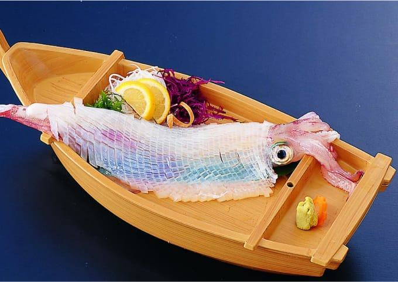
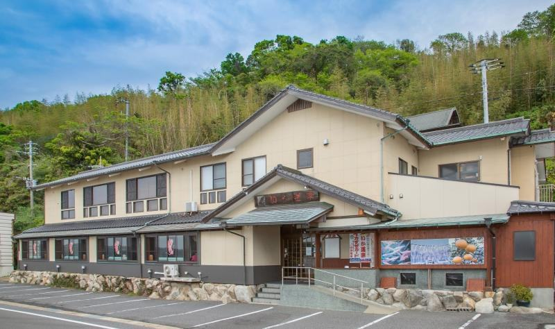
| 営業時間 | 土日祝 10:30〜17:30（16:30オーダーストップ）／平日 10:30〜16:30（15:30オーダーストップ）（公式サイト 2026-11-21 取得） |
|---|---|
| 定休日 | 木曜日。2026年11月は毎週木曜日と11月27日（金）。※業務の都合により店休日が変更・追加になる場合あり |
| 住所 | 佐賀県唐津市呼子町加部島3606 |
| 予約 | 可（前日15:00まで）。電話 0955-82-5539、または公式サイトのレストラン予約フォーム。当日の予約は不可で店頭受付。GW・お盆・シルバーウィーク・年末年始は予約不可。当面20名以上の団体予約は受け付けていない — ☎ 0955-82-5539 ／ 公式サイト |
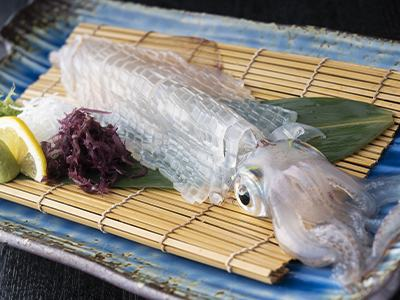
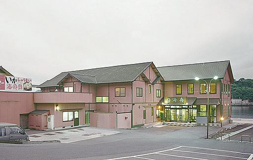
| 営業時間 | 11:00〜17:00（最終受付16:00）※天候・季節により変動、状況により早く閉店する場合あり（公式サイト 2026-11-21 取得） |
|---|---|
| 定休日 | 不定休（月ごとに公式サイトのお知らせで告知。2026年11月は4日・10日・17日） |
| 住所 | 佐賀県唐津市呼子町殿ノ浦552-2 |
| 予約 | 可（3日前まで）。電話 0955-82-5977。折り返しの連絡で予約成立。土日祝・GW（4/25〜5/6）・お盆（8/8〜16）・シルバーウィーク（9/19〜23）・年末年始（12/27〜1/4）は予約不可。当日キャンセルはキャンセル料100％ — ☎ 0955-82-5977 ／ 公式サイト |
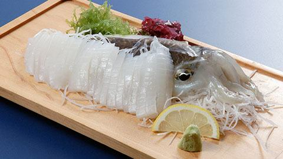
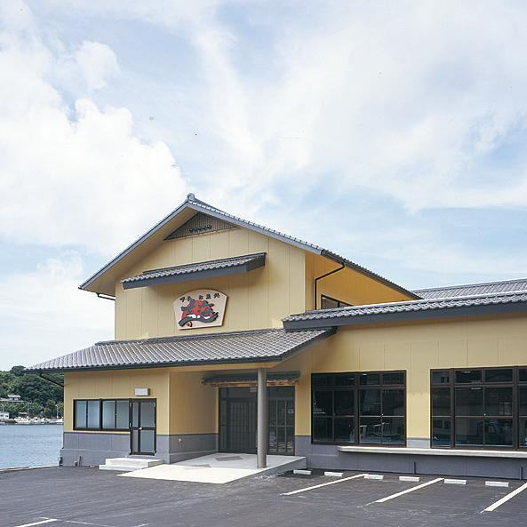
| 営業時間 | 通常 11:00〜17:00（最終受付17:00、予約による最終入店は16:30）／火曜 11:00〜15:30（最終受付15:00）※仕入れや予約状況により早く閉まる場合あり（公式サイト 2026-11-21 取得） |
|---|---|
| 定休日 | 月曜日（祝日の場合は翌火曜日）。月ごとの店休日は公式サイトのお知らせで告知 |
| 住所 | 佐賀県唐津市呼子町殿ノ浦508-3 |
| 予約 | 可。公式サイトのネット予約（ebica）から。7名以上は電話 0955-82-3913（フリーダイヤル 0120-03-3913）。吟さば・あじの造りは前もって予約が要る — ☎ 0955-82-3913 ／ 公式サイト |
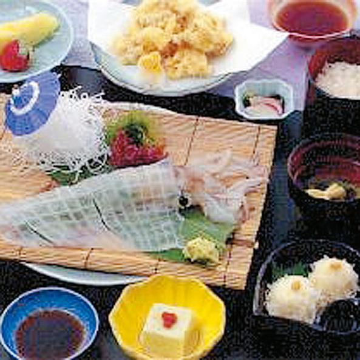
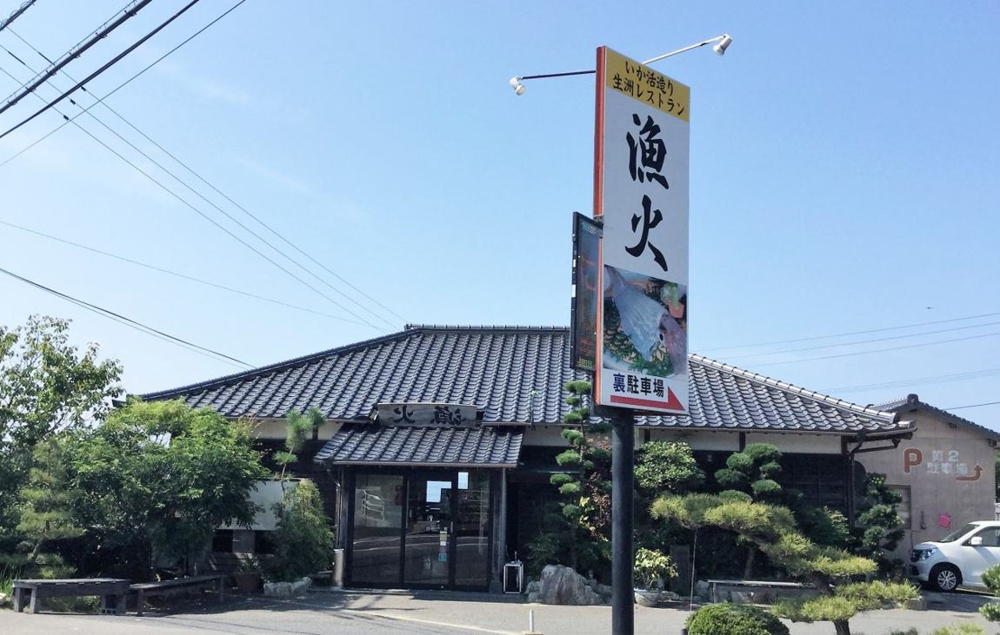
| 営業時間 | 10:00〜15:00（ラストオーダー15:00）※予約が無いと早めに閉店する場合あり（公式サイト 2026-11-21 取得） |
|---|---|
| 定休日 | 水曜日（祝日は除く） |
| 住所 | 佐賀県唐津市呼子町呼子1467-1 |
| 予約 | 可（3日前まで）。電話 0955-82-5224、または公式サイトの「食事ネット予約」。GW・お盆・年末年始は予約不可の期間がある — ☎ 0955-82-5224 ／ 公式サイト |
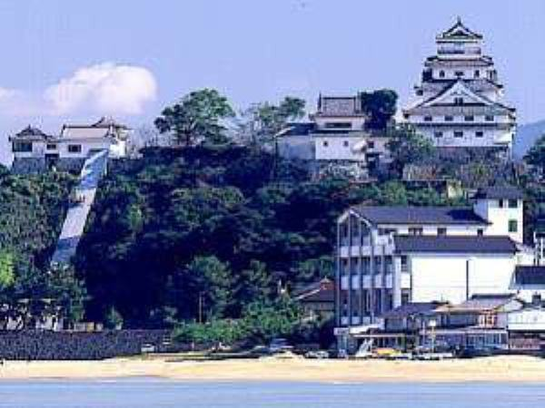
| 営業時間 | 11:30〜14:00オーダーストップ（14:30まで）／17:30〜20:00オーダーストップ（飲み物は21:15オーダーストップ、21:30まで）（公式サイト 2026-11-21 取得） |
|---|---|
| 定休日 | 不定休、12/31〜1/1（唐津観光協会 店舗ページ 2026-11-21 取得） |
| 住所 | 佐賀県唐津市東城内4-3 渚館きむら4階 |
| 予約 | 可。電話 0955-72-4617。日帰りプランは公式サイトから。3名以上は海辺の個室、渚会席は4名以上の予約で旅館の客室も使える。1人分のイカが無い日は2名以上の注文になるため事前の確認が確実 — ☎ 0955-72-4617 ／ 公式サイト |
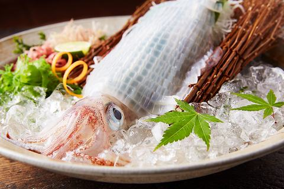
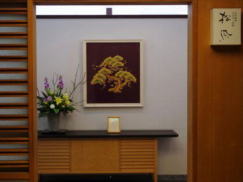
| 営業時間 | 月〜金・祝前日 11:30〜14:30（料理L.O.14:00）／17:30〜21:00（料理L.O.20:30）、土・日・祝 11:30〜15:00（料理L.O.14:30）／17:30〜21:00（料理L.O.20:30）（ホットペッパーグルメ 2026-11-21 取得） |
|---|---|
| 定休日 | なし |
| 住所 | 佐賀県唐津市東唐津4-182 唐津シーサイドホテル西館2F |
| 予約 | 電話 0955-75-3300。ホットペッパーグルメのネット予約は受け付けていない（「現在ネット予約を受け付けていません」と表示） — ☎ 0955-75-3300 |
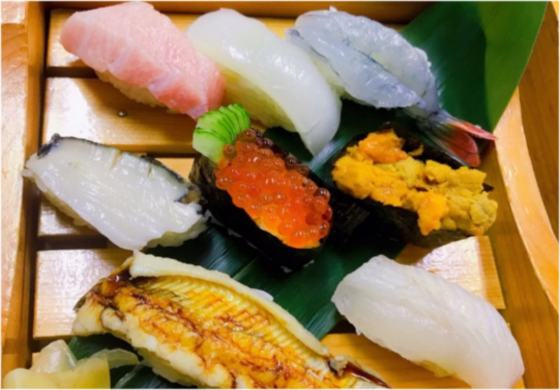
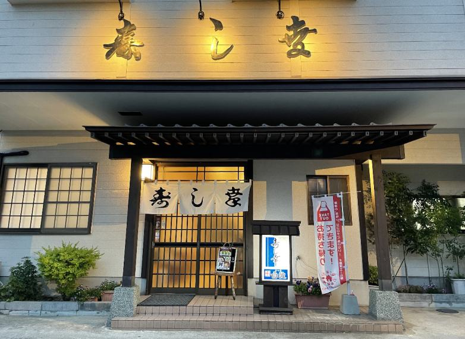
| 営業時間 | 【店内】昼 11:30〜14:00／夜 17:00〜21:00（ラストオーダー）。【テイクアウト】11:30〜20:30。ネタが無くなり次第閉める場合あり（公式サイト 2026-11-21 取得） |
|---|---|
| 定休日 | 水曜日（ほかの日に休むこともあり。公式サイトの店休日カレンダーで確認できる） |
| 住所 | 佐賀県唐津市東町54-1 |
| 予約 | 電話 0955-72-7354。コース料理は2名から、2日前の昼までに要予約（キャンセル・人数変更も2日前まで）。ミニわらべ寿司など一部の品も要予約 — ☎ 0955-72-7354 ／ 公式サイト |
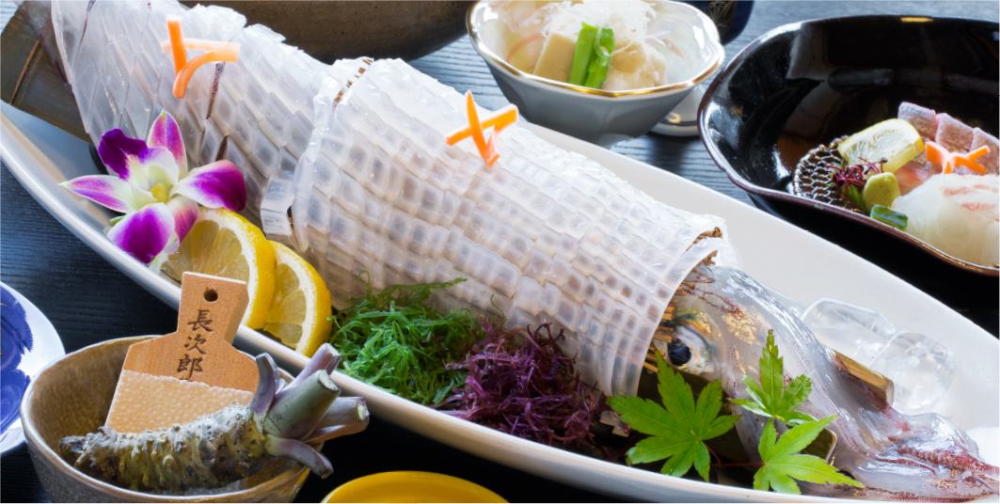
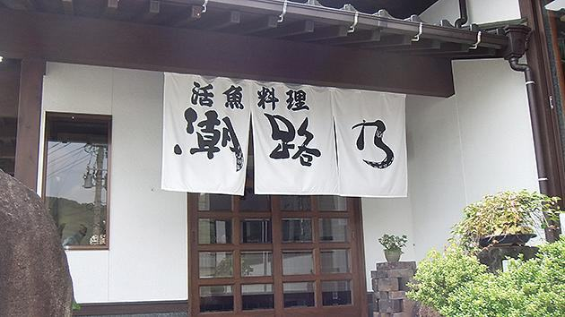
| 営業時間 | 平日 11:00〜15:00／17:00〜20:00（オーダーストップ）、土・日・祝 11:00〜20:00（オーダーストップ）（唐津観光協会／佐賀県「唐津ん魚こだわりの店」 2026-11-21 取得） |
|---|---|
| 定休日 | 毎週木曜日（祝日の場合は営業） |
| 住所 | 佐賀県唐津市浦5183-1 |
| 予約 | 電話 0955-74-8883。コース（極みコース9,300円・潮路乃コース6,800円ほか）は予約をすすめる。併設のサウナ＆コテージはじゃらん・楽天トラベルからも予約できる — ☎ 0955-74-8883 ／ 公式サイト |
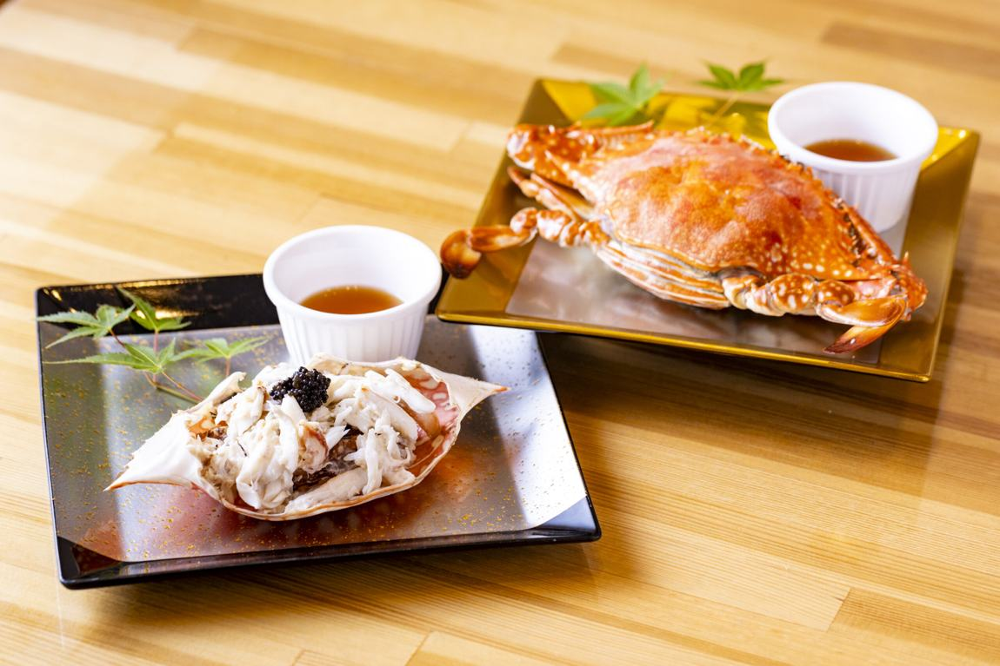
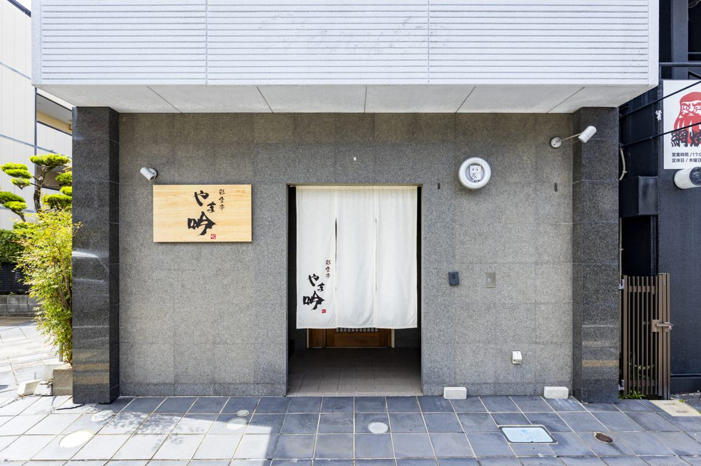
| 営業時間 | 火〜日・祝日・祝前日 17:30〜22:30（料理L.O.22:00／ドリンクL.O.22:00）（ホットペッパーグルメ 2026-11-21 取得） |
|---|---|
| 定休日 | 月曜日 |
| 住所 | 佐賀県唐津市材木町2080-1 |
| 予約 | 電話 0955-75-3112。「幻の唐津んあら鍋」は3日前までに要予約・2名から。個室・掘りごたつあり、貸切は不可 — ☎ 0955-75-3112 |
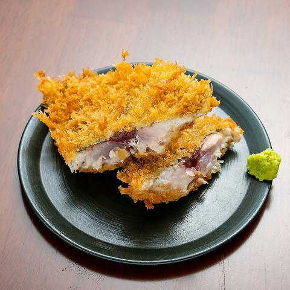
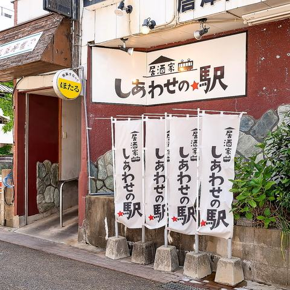
| 営業時間 | 月・火・木 15:00〜22:00（料理L.O.21:00／ドリンクL.O.21:30）、水 18:00〜22:00（同）、金・土 15:00〜23:00（料理L.O.22:00／ドリンクL.O.22:30）、日 15:00〜21:00（料理L.O.20:00／ドリンクL.O.20:30）（ホットペッパーグルメ 2026-11-21 取得） |
|---|---|
| 定休日 | 不定休 |
| 住所 | 佐賀県唐津市木綿町1959 商工共済会館 |
| 予約 | 電話 0955-75-0131、またはホットペッパーグルメのネット予約（即予約は来店日当日21時まで、リクエスト予約は前日17時まで）。コースは2名から、前日23時まで — ☎ 0955-75-0131 |
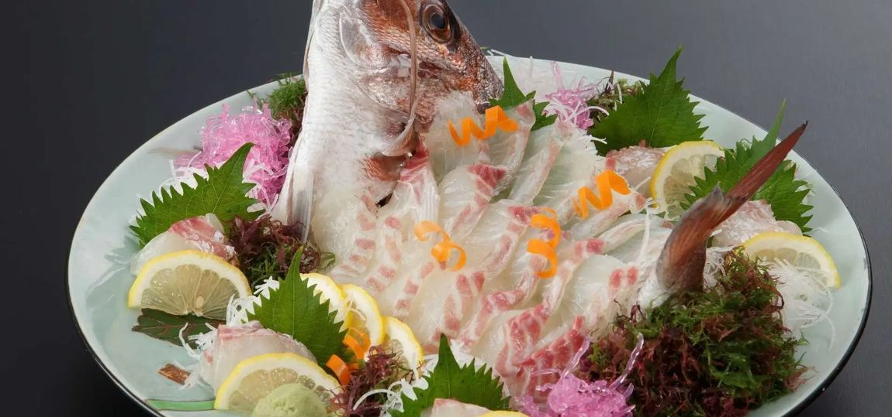
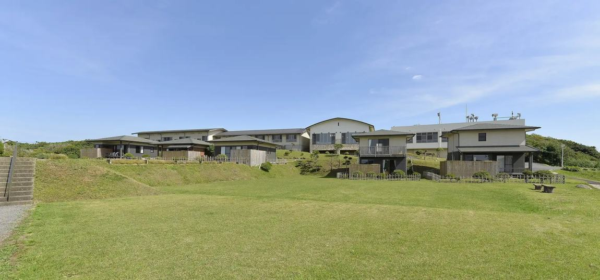
| 営業時間 | レストラン営業は土・日・祝 11:30〜13:30 の受付（公式サイト ランチ 2026-11-21 取得）。団体予約の状況により営業日でも開けない場合がある |
|---|---|
| 定休日 | 平日はレストラン営業なし。休館日は毎月公式サイトのお知らせで告知（例：2026/11/01「11月休館日のお知らせ」） |
| 住所 | 佐賀県唐津市鎮西町波戸1082 |
| 予約 | レストランの事前予約は受け付けていない（公式サイトに明記）。宴会場を使う場合のみ電話 0955-82-1511 で要予約、料理は宴会コースのみ。出かける前に営業の可否を電話で確認するとよい — ☎ 0955-82-1511 ／ 公式サイト |
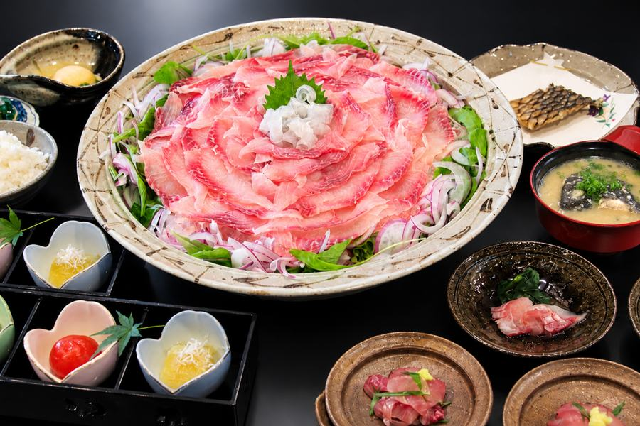
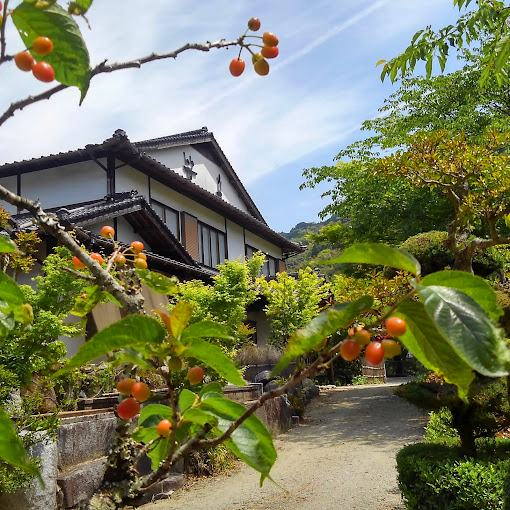
| 営業時間 | 昼 11:30〜15:00（注文は14:00まで）／夜 17:30〜22:00（注文は20:00まで） |
|---|---|
| 定休日 | 毎週水曜日、第2火曜日、年末年始（12月29日〜1月2日。1月3日は早期予約限定） |
| 住所 | 佐賀県唐津市七山白木1687 |
| 予約 | 要予約。来店前に電話 0955-58-2006 で席と料理を予約する。季節懐石は3日前まで、山女魚づくしは2日前まで。宴会は最大20名まで。 — ☎ 0955-58-2006 ／ 公式サイト |
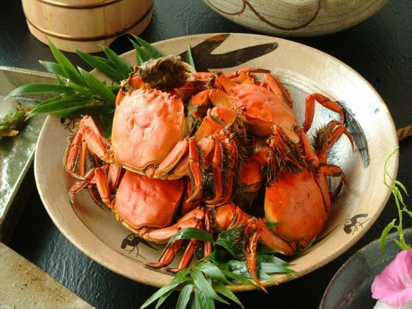
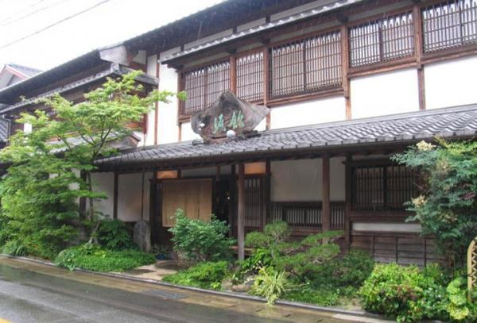
| 営業時間 | 11:00〜21:00（ラストオーダー19:00）。公式ページは入店を「11時・12時・13時（閉め15時半）／17時・18時（閉め21時）」の一斉スタート制として案内している |
|---|---|
| 定休日 | 毎週火曜日 |
| 住所 | 佐賀県唐津市浜玉町五反田1058-2 |
| 予約 | 要予約。公式ページの「ＷＥＢ予約」または電話 050-1724-2537。遅くとも前日15時まで。半年先まで受けるが要相談。定休日の火曜は問い合わせを受けない。 — ☎ 050-1724-2537 ／ 公式サイト |
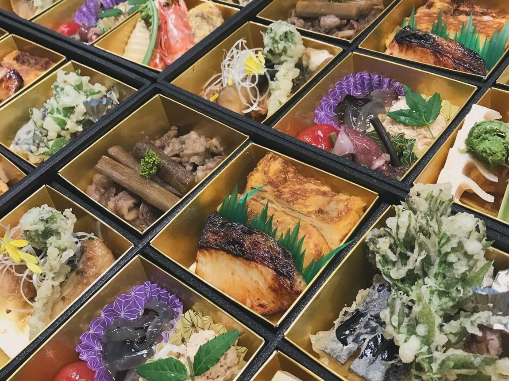
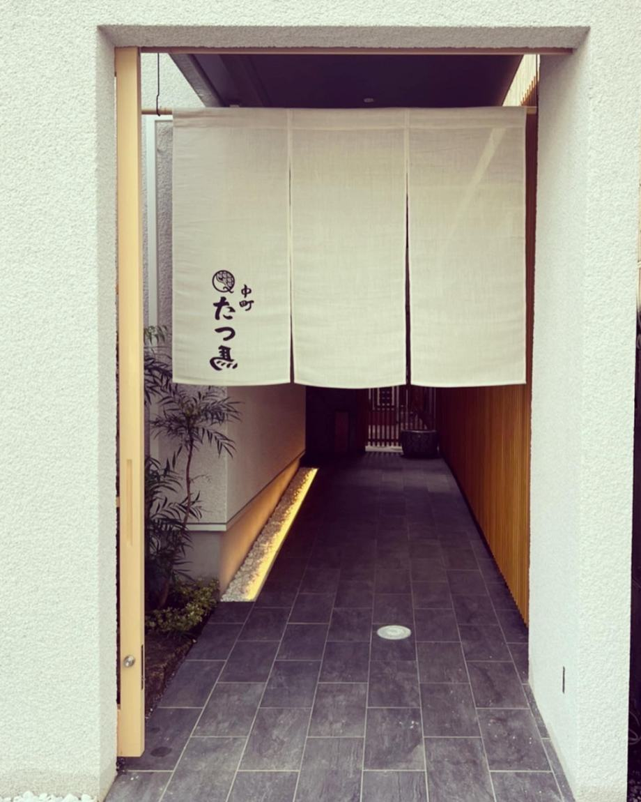
| 営業時間 | 17:30〜21:30（20:00まで入店） |
|---|---|
| 定休日 | 毎週日曜日・月曜日（公式サイトが臨時営業・臨時休業を随時告知する。2026年は11月1日の日曜を臨時営業、11月2日〜5日を臨時休業とした） |
| 住所 | 佐賀県唐津市中町1513-31 |
| 予約 | 要予約。電話 0955-58-9622、または公式サイトのお問い合わせフォーム。キャンセル料は前日80%・当日100%（人数変更も当日は100%）。 — ☎ 0955-58-9622 ／ 公式サイト |
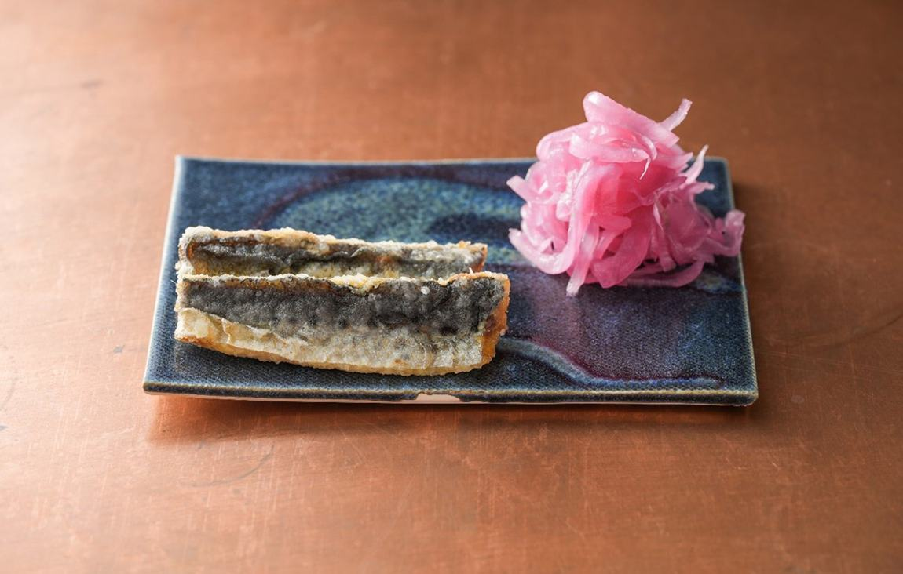
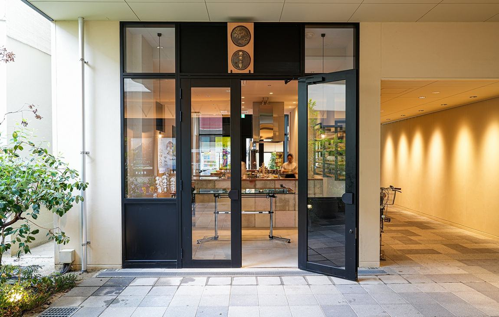
| 営業時間 | ランチ 12:00〜15:00（L.O.14:00）／ディナー 17:00〜23:00（L.O.22:30）（KARAE 公式 2026年10月28日のお知らせ） |
|---|---|
| 定休日 | 不定休（公式Instagram @tamatori_karatsu で告知。唐津くんちの11月2日〜4日は予約制の特別コースのみ） |
| 住所 | 佐賀県唐津市京町1783 KARAE 1階 |
| 予約 | 電話 0955-73-8800。唐津くんち期間などは予約制の特別コースのみになる。店休日と最新の営業時間は公式Instagram（@tamatori_karatsu）で告知される。 — ☎ 0955-73-8800 ／ 公式サイト |
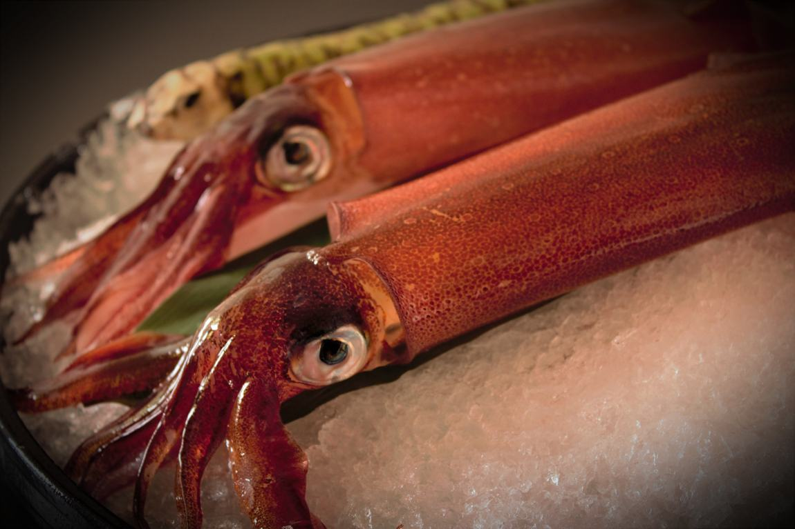
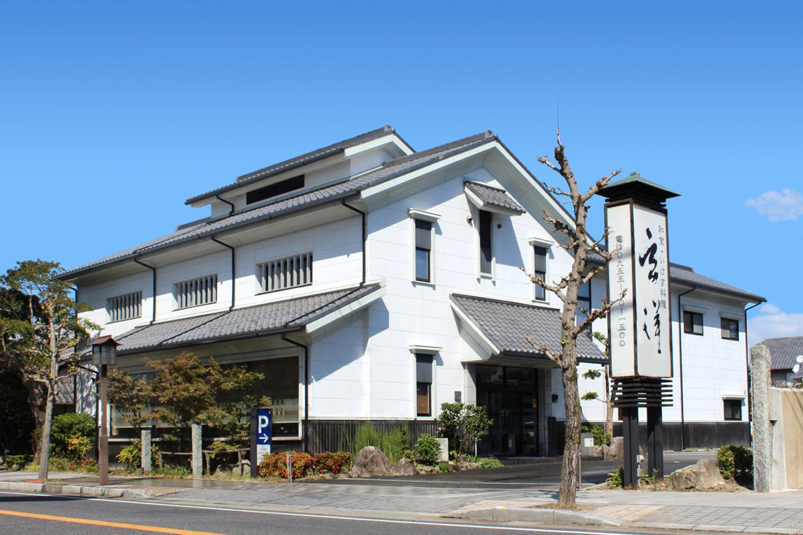
| 営業時間 | 1階レストラン 平日 11:30〜14:30（14:00 O.S）・17:00〜20:30（20:00 O.S）／土曜 11:30〜15:00（14:30 O.S）・17:00〜20:30（20:00 O.S）／日曜・祝日 11:30〜15:00（14:30 O.S）・17:00〜20:00（19:30 O.S）。2階個室 11:30〜15:00（14:30 O.S）・17:00〜21:30（21:00 O.S） |
|---|---|
| 定休日 | 年末年始（唐津観光協会の表示は12月29日〜1月2日） |
| 住所 | 佐賀県唐津市北城内1-16 |
| 予約 | 1階レストランは予約を受けない（公式サイトに明記）。2階個室の会席料理は8名以上・3日前まで、おまかせ会席は8名以上・7日前までの予約が要る。電話 0955-70-1500。キャンセル料は3日前からコース料金の100%、大型連休・繁忙期は5日前から50%。 — ☎ 0955-70-1500 ／ 公式サイト |
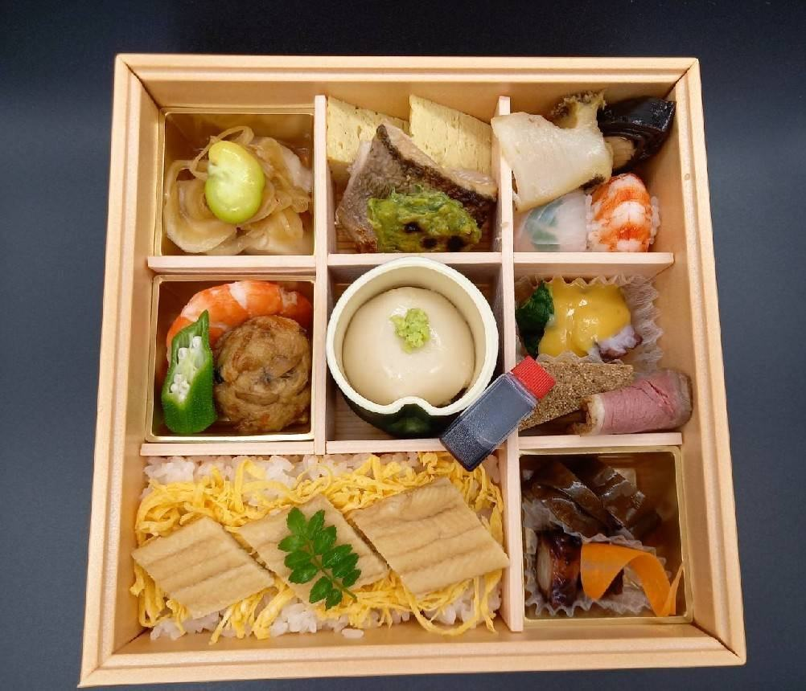
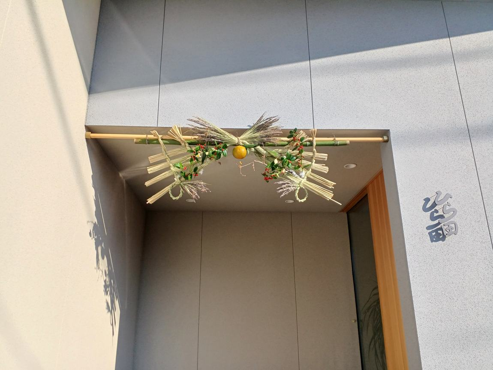
| 営業時間 | ひる 12:00〜15:00／よる 17:30〜22:00 |
|---|---|
| 定休日 | 毎週水曜ほか不定休（毎月第2木曜は夜のみ営業） |
| 住所 | 佐賀県唐津市北城内1-3-2 |
| 予約 | 要予約（前日まで）。電話 0955-74-0351。入店は中学生以上。弁当は3個から3日前まで、出張料理は3〜10名で受ける。 — ☎ 0955-74-0351 ／ 公式サイト |
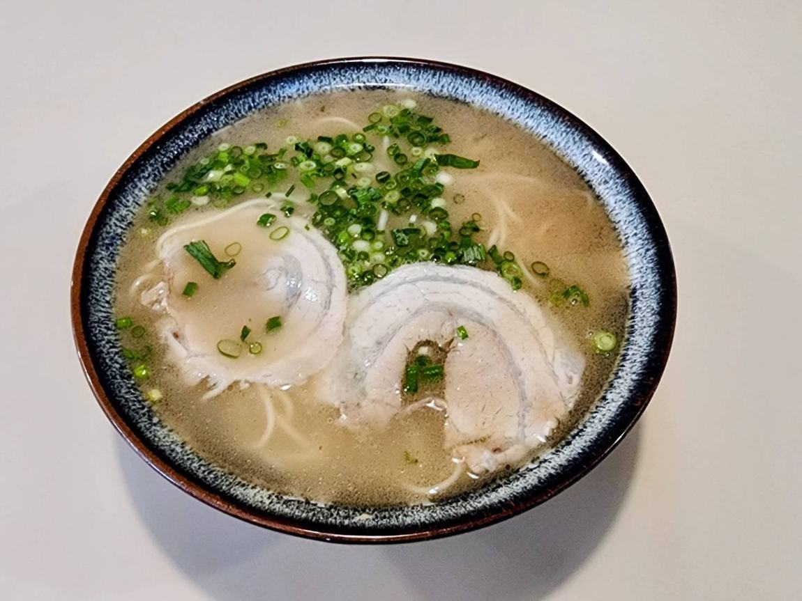
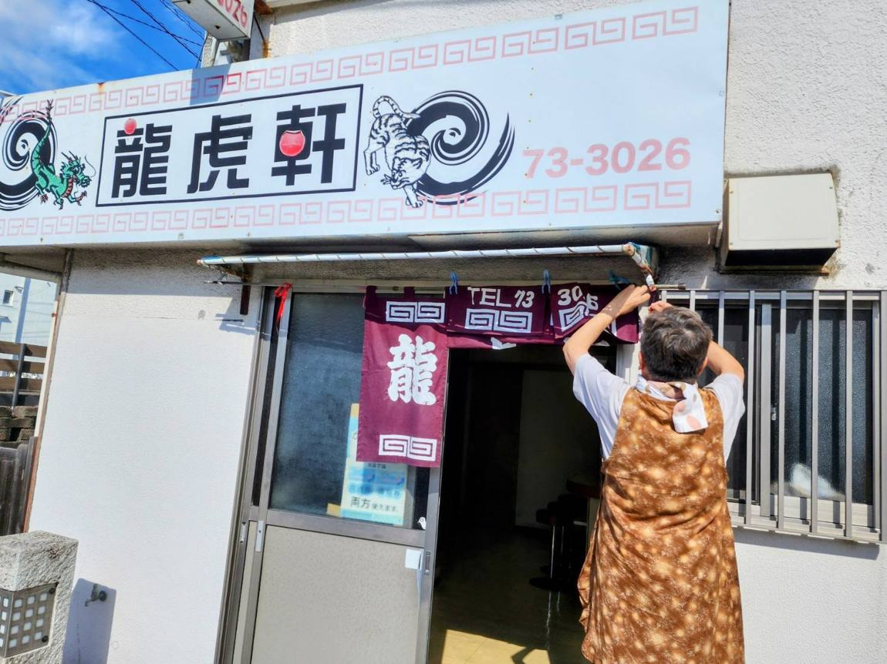
| 営業時間 | 9:00〜20:00（佐賀県「SAGAラーメン」公式note 2026年9月28日／唐津観光協会 店舗ページ 2026-11-21 取得） |
|---|---|
| 定休日 | 毎週月曜日（月曜日が祝日の場合は営業し、翌火曜日が休み）、1月1日 |
| 住所 | 佐賀県唐津市大名小路2-41 |
| 予約 | 予約の受付は公表されていない。問い合わせは電話 0955-73-3026 — ☎ 0955-73-3026 |
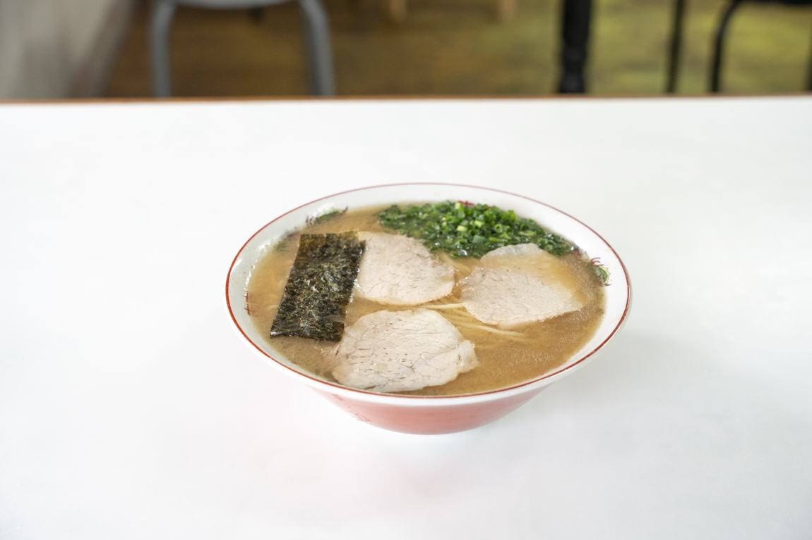
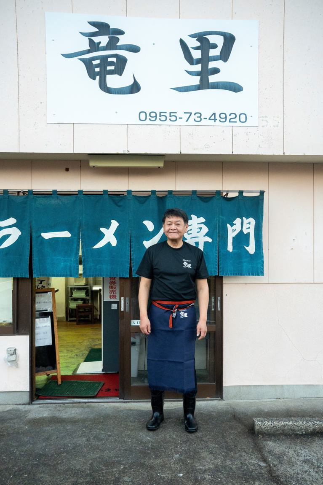
| 営業時間 | 11:30〜16:00（佐賀県「SAGAラーメン」公式note 2026年2月4日／ラーメンWalker 2024年3月5日とも同じ）2026-11-21 取得 |
|---|---|
| 定休日 | 日曜日 |
| 住所 | 佐賀県唐津市菜畑4070-2 |
| 予約 | 予約の受付は公表されていない。問い合わせは電話 0955-73-4920 — ☎ 0955-73-4920 |
| 営業時間 | 11:00〜15:00（ラストオーダー14:30）。昼のみの営業（公式サイト 2026-11-21 取得） |
|---|---|
| 定休日 | 日曜日（公式サイト 2026-11-21 取得） |
| 住所 | 佐賀県唐津市松南町1-78 |
| 予約 | 通常の来店は予約不要。団体・宴会の予約は電話 0955-77-1828 で相談。持ち帰りも電話で注文できる — ☎ 0955-77-1828 ／ 公式サイト |
| 営業時間 | 平日 11:00〜17:00（ラストオーダー16:30）／土・日・祝 11:00〜21:30（ラストオーダー20:30）（公式サイト 2026-11-21 取得） |
|---|---|
| 定休日 | 不定休（最新の営業情報は公式Instagram @kantouken で告知） |
| 住所 | 佐賀県唐津市和多田先石4-2-8 |
| 予約 | 予約の受付は公表されていない。問い合わせは電話 0955-75-7154 — ☎ 0955-75-7154 ／ 公式サイト |
| 営業時間 | 平日 11:00〜15:00／土・日・祝 11:00〜20:00（公式サイト 店舗案内 2026-11-21 取得） |
|---|---|
| 定休日 | 毎週木曜日 |
| 住所 | 佐賀県唐津市菜畑3609-2 |
| 予約 | 不可。公式サイトの店舗案内に「0955-74-3213（予約不可）」と明記 — ☎ 0955-74-3213 ／ 公式サイト |
| 営業時間 | 月・火・木〜日・祝 11:00〜21:00（料理・ドリンクともラストオーダー20:30）。テイクアウトは受付11:00〜20:00、受け渡し11:15〜20:30（ホットペッパーグルメ 2026/09/01 更新 2026-11-21 取得） |
|---|---|
| 定休日 | 水曜日 |
| 住所 | 佐賀県唐津市鏡田中3561-1 |
| 予約 | 可。ホットペッパーグルメのネット予約（即予約は来店日の3日前19時まで、リクエスト予約は3日前まで）。電話は 0955-77-3031 — ☎ 0955-77-3031 ／ 公式サイト |
| 営業時間 | 10:00〜15:30（ラストオーダー15:00）。スープがなくなり次第終了（公式サイト 2026-11-21 取得） |
|---|---|
| 定休日 | 年中無休（公式サイト 2026-11-21 取得） |
| 住所 | 佐賀県唐津市浜玉町浜崎1922 マリンセンターおさかな村内 |
| 予約 | 予約の受付は公表されていない。問い合わせは電話 0955-53-9642 — ☎ 0955-53-9642 ／ 公式サイト |
| 営業時間 | 月・火・水・土・日 11:00〜15:00／17:00〜20:00、第2・第4木曜日 11:00〜15:00（オーダーストップはいずれも閉店の10分前）（佐賀県「さがすたいる」／公式Instagram @meijiezhongcun 2026-11-21 取得） |
|---|---|
| 定休日 | 毎週金曜日、第1・第3木曜日（祝日の場合も休み） |
| 住所 | 佐賀県唐津市熊原町3098-2 |
| 予約 | 予約の受付は公表されていない。問い合わせは電話 0955-75-5004 — ☎ 0955-75-5004 |
| 営業時間 | 11:00〜17:00（月〜日。日により営業時間が変動する場合あり）（ホットペッパーグルメ 2025年5月9日更新／唐津観光協会 2026-11-21 取得） |
|---|---|
| 定休日 | 不定休（ホットペッパーグルメ 2025年5月9日更新／唐津観光協会 2026-11-21 取得） |
| 住所 | 佐賀県唐津市鎮西町名護屋1935 |
| 予約 | 座敷での宴会は要予約（唐津観光協会）。土日は観光客が多いため事前予約が確実（ホットペッパーグルメ）。問い合わせは電話 0955-82-5026 — ☎ 0955-82-5026 |
| 営業時間 | 月・火・木〜日・祝日・祝前日 17:30〜翌0:00（料理L.O.23:00、ドリンクL.O.23:30）。問い合わせは17:00〜24:00（ホットペッパーグルメ 2026-11-21 取得） |
|---|---|
| 定休日 | 水曜日 |
| 住所 | 佐賀県唐津市刀町1522-2 サンゴビル1F |
| 予約 | 可。電話 0955-73-0017、またはホットペッパーグルメのネット予約（即予約は来店日の当日17時まで、リクエスト予約は3日前まで）。飲み放題は要予約。公式サイトは無い — ☎ 0955-73-0017 |
| 営業時間 | 月〜土・祝前日 17:30〜23:30（料理L.O.23:00、ドリンクL.O.23:00）／日曜 17:30〜23:00（L.O.22:30）／祝日 17:30〜23:30（L.O.22:30）（ホットペッパーグルメ 2026-11-21 取得） |
|---|---|
| 定休日 | 不定休 |
| 住所 | 佐賀県唐津市中町1513 |
| 予約 | 可。電話 0955-75-4330、またはホットペッパーグルメのネット予約（即予約は来店日の前日15時まで、リクエスト予約は前日17時まで）。インスタグラムのダイレクトメッセージでは予約を受け付けていない — ☎ 0955-75-4330 ／ 公式サイト |
| 営業時間 | 月〜水・金 18:00〜翌0:00（料理L.O.23:00、ドリンクL.O.23:00）／土・日 17:00〜翌0:00（料理L.O.23:00、ドリンクL.O.23:00）（ホットペッパーグルメ 2026-11-21 取得） |
|---|---|
| 定休日 | 木曜日 |
| 住所 | 佐賀県唐津市材木町2081-1 さくらビル1F・2F |
| 予約 | 可。電話 0955-75-3330、またはホットペッパーグルメのネット予約（即予約は来店日の前日20時まで、リクエスト予約は前日17時まで）。公式サイトは無い — ☎ 0955-75-3330 |
| 営業時間 | 11:30〜14:30（14:00 オーダーストップ）／17:00〜22:00（公式サイトは夜の記載がオーダーストップ無し、公式インスタグラムは定食系L.O.20:30・焼肉L.O.21:30、ホットペッパーは料理・ドリンクともL.O.21:00）（公式サイト 2026-11-21 取得） |
|---|---|
| 定休日 | 水曜日、年末年始 |
| 住所 | 佐賀県唐津市枝去木2032-3 |
| 予約 | 可。電話 0955-73-8384、公式サイトのWEB予約、またはホットペッパーグルメのリクエスト予約（来店日の前日17時まで）。宴会プランは4名から要予約。コース予約は来店前日17時以降のキャンセルでコース料金の50％、席のみ予約は当日17時以降のキャンセルで1名4,000円がかかる。10名以上で送迎（唐津市内・玄海町内）を相談できる — ☎ 0955-73-8384 ／ 公式サイト |
| 営業時間 | 火〜日・祝日・祝前日 18:00〜翌0:00（料理L.O.23:20）（ホットペッパーグルメ 2026-11-21 取得） |
|---|---|
| 定休日 | 月曜日（定休日の翌日が祝日の場合は営業。お盆・年末年始・唐津くんちの時期は営業日が変わることがある） |
| 住所 | 佐賀県唐津市中町1830-1 |
| 予約 | 可。電話 0955-73-0052、またはホットペッパーグルメのリクエスト予約（来店日の3日前まで）。コースのアイスクリーム無料は1日前までの予約が条件。公式サイトは無く、公式インスタグラム（@nikudining_ippuku）のプロフィール欄にWEB予約の入口がある — ☎ 0955-73-0052 |
| 営業時間 | 11:00〜14:30（料理L.O.14:00）／17:00〜21:00（料理L.O.20:00）（公式サイト 2026-11-21 取得） |
|---|---|
| 定休日 | 水曜日（水曜が祝日の場合は営業）、1月1日。大型連休後に臨時休業を設ける場合あり。2026年末から2027年始は12月30日休業、12月31日はランチのみ14:00まで、1月1日終日休業 |
| 住所 | 佐賀県唐津市浜玉町浜崎217-2 |
| 予約 | 可。電話 0955-56-8822、またはホットペッパーグルメのネット予約（来店日の当日19時まで）。個室の予約は1名7,000円（国産ステーキセット）から受け付ける — ☎ 0955-56-8822 ／ 公式サイト |
| 営業時間 | ランチ 11:30〜15:00（L.O.14:30）／ディナー 18:00〜22:00（L.O.20:30）（公式サイト 2026-11-21 取得） |
|---|---|
| 定休日 | 毎週月曜日・火曜日（唐津くんちの時期は別に休業日を設ける。月ごとの営業日は公式インスタグラムで告知） |
| 住所 | 佐賀県唐津市中町1845 丸廣ビル1F |
| 予約 | 可。公式サイトが「予約は食べログから」と案内しており、当日の予約は電話 0955-74-2326 で受ける — ☎ 0955-74-2326 ／ 公式サイト |
| 営業時間 | 平日 8:00〜12:00／土・日・祝 8:00〜13:00。いずれもそのあと16:00までクラフトビールの提供と瓶の販売を続ける（午後は呼び鈴でスタッフを呼ぶ）。イカカツなどのフードは8:00〜12:00／13:00の営業時間内のみ（公式サイト お知らせ 2026年10月30日 2026-11-21 取得） |
|---|---|
| 定休日 | 不定休（公式インスタグラムで告知） |
| 住所 | 佐賀県唐津市呼子町呼子3764-4 |
| 予約 | 予約の受け付けは無い（オールスタンディングの立ち飲みで、来た順に醸造家が注ぐ）。飲食店・酒販店としての取り扱いの問い合わせは公式サイトのフォームから — ☎ 0955-82-5670 ／ 公式サイト |
| 営業時間 | 9:00〜20:00（売り切れ次第終了）（公式サイト 虹ノ松原本店 2026-11-21 取得） |
|---|---|
| 定休日 | 年中無休 |
| 住所 | 佐賀県唐津市虹ノ松原 虹の松原 |
| 予約 | 予約の受付について公式サイトに記載が無い。注文を受けてから焼く店頭販売のみ。問い合わせは電話 0955-56-7119 — ☎ 0955-56-7119 ／ 公式サイト |
| 営業時間 | 9:00〜19:00（公式サイト 店舗紹介 2026-11-21 取得） |
|---|---|
| 定休日 | 1月1日（唐津観光協会 店舗ページは「【本店】1月1・2日／【支店】1月1日」と記載。2026-11-21 取得） |
| 住所 | 佐賀県唐津市和多田本村4-51 |
| 予約 | 予約不要。工場見学のみ事前予約が必要（公式サイト 店舗紹介）。地方発送と公式オンラインショップあり — ☎ 0955-73-3185 ／ 公式サイト |
| 営業時間 | 公式サイトのアクセス欄は 11:00〜18:00（ラストオーダー17:30）、公式Instagramのプロフィールは 11:00〜17:00（ラストオーダー16:30）で食い違う。唐津観光協会は 11:00〜17:00（2026-11-21 取得） |
|---|---|
| 定休日 | 火曜日・第4月曜日、ほかに不定休あり。2026年11月の休みは3日・4日・10日・17日・24日・25日（公式Instagramのプロフィール 2026-11-21 取得） |
| 住所 | 佐賀県唐津市東唐津1丁目9-21 |
| 予約 | 喫茶・民芸品・結納の問い合わせはすべて電話 0955-72-8188（受付 10:00〜18:00、定休日は火曜ほか不定休）。喫茶の席の予約について公式サイトに記載は無い — ☎ 0955-72-8188 ／ 公式サイト |
| 営業時間 | 7:30〜18:00（公式サイトのフロアガイド 2026-11-21 取得／2026年10月15日のお知らせの受付時間も 7:30〜18:00）。佐賀県「さがすたいる」の掲載はモーニング7:30〜10:00・ランチ11:30〜15:00（L.O.14:30）・カフェ15:00〜18:00（L.O.17:00）と時間帯を分けて記載 |
|---|---|
| 定休日 | 公式サイトに定休日の記載が無く未確認。佐賀県「さがすたいる」の掲載は「年中無休」だが取材時点の情報（2026-11-21 取得） |
| 住所 | 佐賀県唐津市京町1783 KARAE（唐重）1階 |
| 予約 | 通常の来店は予約不要。15名以上の貸切パーティー（2時間）は3日前までの電話予約制で、電話 050-1871-1435（受付 7:30〜18:00） — ☎ 050-1871-1435 ／ 公式サイト |
| 営業時間 | 11:30〜18:00頃（公式Instagramのプロフィール 2026-11-21 取得）。フクリパの2025年7月6日の記事は「12:00〜20:00（オーダーストップ19:00）」と記しており食い違う。2026年10月7日の公式投稿に「しばらくの間は短縮営業となります」とあるので、行く前に公式Instagramで確認した方が確実 |
|---|---|
| 定休日 | 木曜日、ほかに不定休（公式Instagramのプロフィール 2026-11-21 取得） |
| 住所 | 佐賀県唐津市七山滝川540-2 |
| 予約 | 公式サイトは無く、予約の可否は公表されていない。問い合わせは電話 0955-58-2747 — ☎ 0955-58-2747 |
| 営業時間 | 12:00〜18:00（公式サイト カフェのページ／公式Instagramのプロフィール 2026-11-21 取得） |
|---|---|
| 定休日 | 水曜日 |
| 住所 | 佐賀県唐津市江川町627 |
| 予約 | 電話番号は公開されておらず、連絡は公式Instagram（@calali_1881）か メール（公式サイト記載のアドレス calali.info@gmail.com）。公式サイトには問い合わせフォームもある。カフェの席の予約について公式サイトに記載は無い。宿泊は1日1組限定で要問い合わせ — 公式サイト |
| 営業時間 | 10:00〜18:00（唐津観光協会 店舗ページ／公式Instagramのプロフィール 2026-11-21 取得） |
|---|---|
| 定休日 | 水曜日（祝日の場合は翌日）、8月16日、12月31日〜1月3日（唐津観光協会 店舗ページ 2026-11-21 取得） |
| 住所 | 佐賀県唐津市松南町2-76 |
| 予約 | イートインの予約についての記載は公式サイト・公式SNSのいずれにも無い。店の問い合わせは電話 0955-53-8648、通信販売の問い合わせはフリーダイヤル 0120-17-8683（10:00〜17:00、日・祝・休業日を除く） — ☎ 0955-53-8648 ／ 公式サイト |
| 営業時間 | 9:30〜16:30（ラストオーダー16:00）（公式Instagramのプロフィール 2026-11-21 取得） |
|---|---|
| 定休日 | なし（公式Instagramのプロフィール 2026-11-21 取得）。ただし公式サイトは「営業時間・定休日に関しては、公式Instagramにてご確認ください」と案内している |
| 住所 | 佐賀県唐津市呼子町呼子3766 |
| 予約 | 予約についての記載は公式サイト・公式Instagramのいずれにも無い。問い合わせは電話 0955-58-7339 — ☎ 0955-58-7339 ／ 公式サイト |
本ガイドは個人利用目的で作成。掲載情報は2026年11月時点の調査に基づく。写真出典: 各店の公式サイト・公式SNS、および地域情報サイト等の掲載写真（著作権は各サイト・各撮影者に帰属）。引用元は店ごとにカード内へ明記。